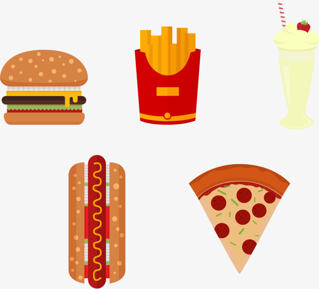

<!--
  Generated template for the SubcatalogosPage page.

  See http://ionicframework.com/docs/components/#navigation for more info on
  Ionic pages and navigation.
-->
<ion-header>

  <ion-navbar color="primary">
    <ion-title>Cátalogo de productos</ion-title>
  </ion-navbar>

</ion-header>


<ion-content style="background-image: url('../../assets/fondo.jpg')">
    <ion-grid style="background-image: url('../../assets/fondo1.jpg');height: 30%;">
        <ion-row  style="height: 100%;">
          
        </ion-row>
      </ion-grid>
      <ion-list>
          <ion-list-header colo="light">
              <strong>Productos</strong>
              <ion-icon item-end name="pizza"></ion-icon>
            </ion-list-header>
          <ion-item>
            <ion-avatar item-start>
              
            </ion-avatar>
            <h2>Cher</h2>
            <p>Ugh. As if.</p>
          </ion-item>
          <ion-item >
              <ion-avatar item-start>
                
              </ion-avatar>
              <h2>Cher</h2>
              <p>Ugh. As if.</p>
            </ion-item>
            <ion-item>
                <ion-avatar item-start>
                  
                </ion-avatar>
                <h2>Cher</h2>
                <p>Ugh. As if.</p>
              </ion-item>
        </ion-list>
     <ion-fab right bottom #fab>
        <button ion-fab color="botonflotante"><ion-icon name="arrow-dropup"></ion-icon></button>
        <ion-fab-list side="top">
            <button (click)="ingresarSistema(fab);" ion-fab><ion-icon name="person"></ion-icon></button>
          <button ion-fab><ion-icon name="add"></ion-icon></button>
        </ion-fab-list>
      </ion-fab>
</ion-content>
